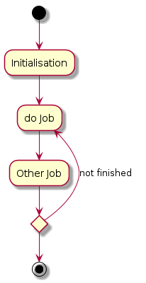

Your browser doesn't support the features required by impress.js, so you are presented with a simplified version of this presentation.
For the best experience please use the latest Chrome or Safari browser. Firefox 10 (to be released soon) will also handle it.
Hello, hello hello.
my $a = 0; for my $b ( @c ) { sub { $a++ }->(); }
check this: org-mode

Use a spacebar or arrow keys to navigate